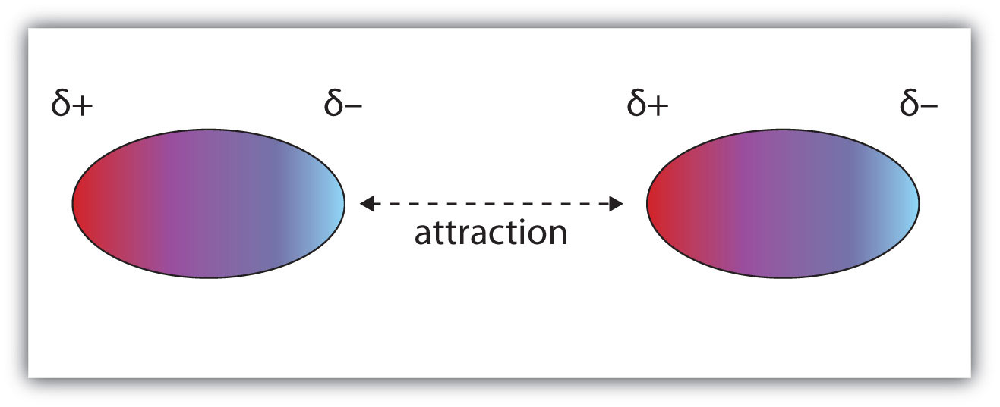
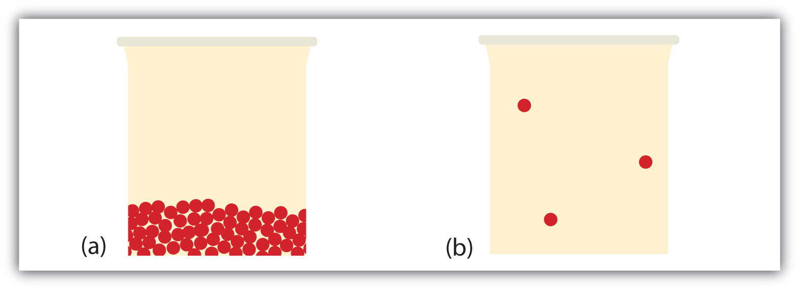
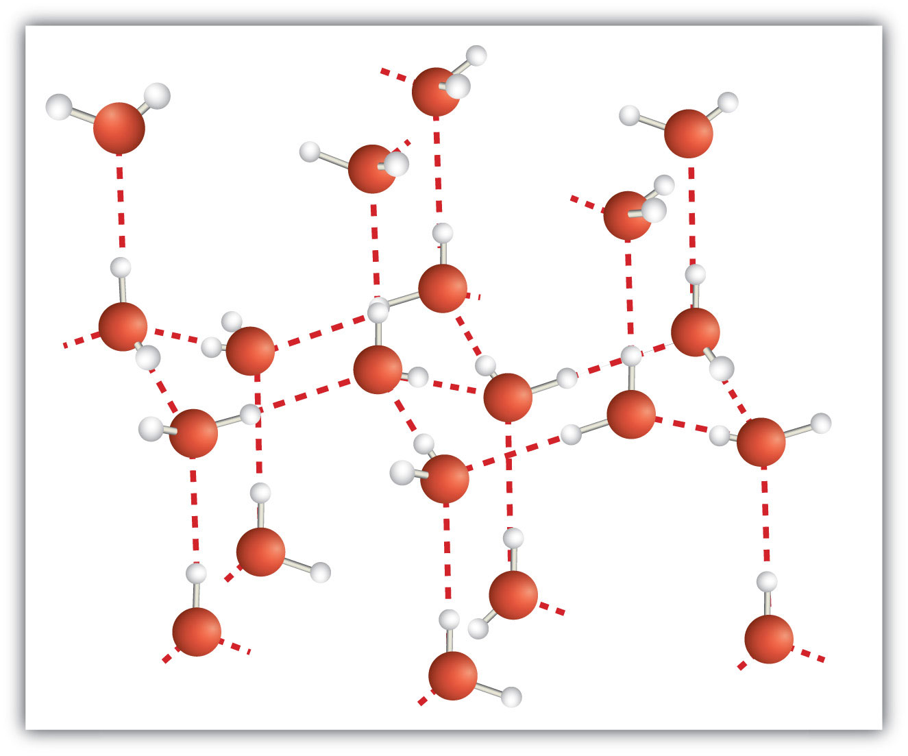

There is an urban legend that glass is an extremely thick liquid rather than a solid, even at room temperature. Proponents claim that old windows are thicker at the bottom than at the top, suggesting that the glass flowed down over time. Unfortunately, the proponents of this idea have no credible evidence that this is true, as old windows were likely not subject to the stricter manufacturing standards that exist today. Also, when mounting a piece of glass that has an obviously variable thickness, it makes structural sense to put the thicker part at the bottom, where it will support the object better.
Liquids flow when a small force is placed on them, even if only very slowly. Solids, however, may deform under a small force, but they return to their original shape when the force is relaxed. This is how glass behaves: it goes back to its original shape (unless it breaks under the applied force). Observers also point out that telescopes with glass lenses to focus light still do so even decades after manufacture—a circumstance that would not be so if the lens were liquid and flowed.
Glass is a solid at room temperature. Don’t let anyone tell you otherwise!
In Chapter 6 "Gases", we discussed the properties of gases. Here, we consider some properties of liquids and solids. As a review, Table 10.1 "Properties of the Three Phases of Matter" lists some general properties of the three phases of matter.
Table 10.1 Properties of the Three Phases of Matter
| Phase | Shape | Density | Compressibility |
|---|---|---|---|
| Gas | fills entire container | low | high |
| Liquid | fills a container from bottom to top | high | low |
| Solid | rigid | high | low |
Why does a substance have the phase it does? The preferred phase of a substance at a given set of conditions is a balance between the energy of the particles and intermolecular forces (or intermolecular interactions) between the particles. If the forces between particles are strong enough, the substance is a liquid or, if stronger, a solid. If the forces between particles are weak and sufficient energy is present, the particles separate from each other, so the gas phase is the preferred phase. The energy of the particles is mostly determined by temperature, so temperature is the main variable that determines what phase is stable at any given point.
What forces define intermolecular interactions? There are several. A force present in all substances with electrons is the dispersion forceAn intermolecular force caused by the instantaneous position of an electron in a molecule. (sometimes called the London dispersion force, after the physicist Fritz London, who first described this force in the early 1900s). This interaction is caused by the instantaneous position of an electron in a molecule, which temporarily makes that point of the molecule negatively charged and the rest of the molecule positively charged. In an instant, the electron is now somewhere else, but the fleeting imbalance of electric charge in the molecule allows molecules to interact with each other. As you might expect, the greater the number of electrons in a species, the stronger the dispersion force; this partially explains why smaller molecules are gases and larger molecules are liquids and solids at the same temperature. (Mass is a factor as well.)
Molecules with a permanent dipole moment experience dipole-dipole interactionsAn intermolecular force caused by molecules with a permanent dipole., which are generally stronger than dispersion forces if all other things are equal. The oppositely charged ends of a polar molecule, which have partial charges on them, attract each other (Figure 10.1 "Dipole-Dipole Interactions"). Thus a polar molecule such CH2Cl2 has a significantly higher boiling point (313 K, or 40°C) than a nonpolar molecule like CF4 (145 K, or −128°C), even though it has a lower molar mass (85 g/mol vs. 88 g/mol).
Figure 10.1 Dipole-Dipole Interactions
Oppositely charged ends of polar molecules attract each other.
An unusually strong form of dipole-dipole interaction is called hydrogen bondingThe very strong interaction between molecules due to H atoms being bonded to N, O, or F atoms.. Hydrogen bonding is found in molecules with an H atom bonded to an N atom, an O atom, or an F atom. Such covalent bonds are very polar, and the dipole-dipole interaction between these bonds in two or more molecules is strong enough to create a new category of intermolecular force. Hydrogen bonding is the reason water has unusual properties. For such a small molecule (its molar mass is only 18 g/mol), H2O has relatively high melting and boiling points. Its boiling point is 373 K (100°C), while the boiling point of a similar molecule, H2S, is 233 K (−60°C). This is because H2O molecules experience hydrogen bonding, while H2S molecules do not. This strong attraction between H2O molecules requires additional energy to separate the molecules in the condensed phase, so its boiling point is higher than would be expected. Hydrogen bonding is also responsible for water’s ability as a solvent, its high heat capacity, and its ability to expand when freezing; the molecules line up in such a way that there is extra space between the molecules, increasing its volume in the solid state (Figure 10.2 "Hydrogen Bonding").
Figure 10.2 Hydrogen Bonding

When water solidifies, hydrogen bonding between the molecules forces the molecules to line up in a way that creates empty space between the molecules, increasing the overall volume of the solid. This is why ice is less dense than liquid water.
Identify the most significant intermolecular force in each substance.
Solution
Test Yourself
Identify the most significant intermolecular force in each substance.
Answers
The preferred phase a substance adopts can change with temperature. At low temperatures, most substances are solids (only helium is predicted to be a liquid at absolute zero). As the temperature increases, those substances with very weak intermolecular forces become gases directly (in a process called sublimation, which will be discussed in Section 10.2 "Phase Transitions: Melting, Boiling, and Subliming"). Substances with weak interactions can become liquids as the temperature increases. As the temperature increases even more, the individual particles will have so much energy that the intermolecular forces are overcome, so the particles separate from each other, and the substance becomes a gas (assuming that their chemical bonds are not so weak that the compound decomposes from the high temperature). Although is it difficult to predict the temperature ranges for which solid, liquid, or gas is the preferred phase for any random substance, all substances progress from solid to liquid to gas in that order as temperature increases.
What type of intermolecular force do all substances have?
What is necessary for a molecule to experience dipole-dipole interactions?
What is necessary for a molecule to experience hydrogen bonding?
How does varying the temperature change the preferred phase of a substance?
Identify the strongest intermolecular force present in each substance.
Identify the strongest intermolecular force present in each substance.
Identify the strongest intermolecular force present in each substance.
Identify the strongest intermolecular force present in each substance.
dispersion force
An H atom must be bonded to an N, O, or F atom.
Substances can change phase—often because of a temperature change. At low temperatures, most substances are solid; as the temperature increases, they become liquid; at higher temperatures still, they become gaseous.
The process of a solid becoming a liquid is called meltingThe process of a solid becoming a liquid. (an older term that you may see sometimes is fusion). The opposite process, a liquid becoming a solid, is called solidificationThe process of a liquid becoming a solid.. For any pure substance, the temperature at which melting occurs—known as the melting pointThe characteristic temperature at which a solid becomes a liquid.—is a characteristic of that substance. It requires energy for a solid to melt into a liquid. Every pure substance has a certain amount of energy it needs to change from a solid to a liquid. This amount is called the enthalpy of fusion (or heat of fusion)The amount of energy needed to change from a solid to a liquid or from a liquid to a solid. of the substance, represented as ΔHfus. Some ΔHfus values are listed in Table 10.2 "Enthalpies of Fusion for Various Substances"; it is assumed that these values are for the melting point of the substance. Note that the unit of ΔHfus is kilojoules per mole, so we need to know the quantity of material to know how much energy is involved. The ΔHfus is always tabulated as a positive number. However, it can be used for both the melting and the solidification processes as long as you keep in mind that melting is always endothermic (so ΔH will be positive), while solidification is always exothermic (so ΔH will be negative).
Table 10.2 Enthalpies of Fusion for Various Substances
| Substance (Melting Point) | ΔHfus (kJ/mol) |
|---|---|
| Water (0°C) | 6.01 |
| Aluminum (660°C) | 10.7 |
| Benzene (5.5°C) | 9.95 |
| Ethanol (−114.3°C) | 5.02 |
| Mercury (−38.8°C) | 2.29 |
What is the energy change when 45.7 g of H2O melt at 0°C?
Solution
The ΔHfus of H2O is 6.01 kJ/mol. However, our quantity is given in units of grams, not moles, so the first step is to convert grams to moles using the molar mass of H2O, which is 18.0 g/mol. Then we can use ΔHfus as a conversion factor. Because the substance is melting, the process is endothermic, so the energy change will have a positive sign.
Without a sign, the number is assumed to be positive.
Test Yourself
What is the energy change when 108 g of C6H6 freeze at 5.5°C?
Answer
−13.8 kJ
During melting, energy goes exclusively to changing the phase of a substance; it does not go into changing the temperature of a substance. Hence melting is an isothermalA process that does not change the temperature. process because a substance stays at the same temperature. Only when all of a substance is melted does any additional energy go to changing its temperature.
What happens when a solid becomes a liquid? In a solid, individual particles are stuck in place because the intermolecular forces cannot be overcome by the energy of the particles. When more energy is supplied (e.g., by raising the temperature), there comes a point at which the particles have enough energy to move around but not enough energy to separate. This is the liquid phase: particles are still in contact but are able to move around each other. This explains why liquids can assume the shape of their containers: the particles move around and, under the influence of gravity, fill the lowest volume possible (unless the liquid is in a zero-gravity environment—see Figure 10.3 "Liquids and Gravity").
The phase change between a liquid and a gas has some similarities to the phase change between a solid and a liquid. At a certain temperature, the particles in a liquid have enough energy to become a gas. The process of a liquid becoming a gas is called boiling (or vaporization)The process of a liquid becoming a gas., while the process of a gas becoming a liquid is called condensationThe process of a gas becoming a liquid.. However, unlike the solid/liquid conversion process, the liquid/gas conversion process is noticeably affected by the surrounding pressure on the liquid because gases are strongly affected by pressure. This means that the temperature at which a liquid becomes a gas, the boiling pointThe characteristic temperature at which a liquid becomes a gas., can change with surrounding pressure. Therefore, we define the normal boiling pointThe characteristic temperature at which a liquid becomes a gas when the surrounding pressure is exactly 1 atm. as the temperature at which a liquid changes to a gas when the surrounding pressure is exactly 1 atm, or 760 torr. Unless otherwise specified, it is assumed that a boiling point is for 1 atm of pressure.
Like the solid/liquid phase change, the liquid/gas phase change involves energy. The amount of energy required to convert a liquid to a gas is called the enthalpy of vaporizationThe amount of energy needed to change from a liquid to a gas or from a gas to a liquid. (or heat of vaporization), represented as ΔHvap. Some ΔHvap values are listed in Table 10.3 "Enthalpies of Vaporization for Various Substances"; it is assumed that these values are for the normal boiling point temperature of the substance, which is also given in the table. The unit for ΔHvap is also kilojoules per mole, so we need to know the quantity of material to know how much energy is involved. The ΔHvap is also always tabulated as a positive number. It can be used for both the boiling and the condensation processes as long as you keep in mind that boiling is always endothermic (so ΔH will be positive), while condensation is always exothermic (so ΔH will be negative).
Table 10.3 Enthalpies of Vaporization for Various Substances
| Substance (Normal Boiling Point) | ΔHvap (kJ/mol) |
|---|---|
| Water (100°C) | 40.68 |
| Bromine (59.5°C) | 15.4 |
| Benzene (80.1°C) | 30.8 |
| Ethanol (78.3°C) | 38.6 |
| Mercury (357°C) | 59.23 |
What is the energy change when 66.7 g of Br2(g) condense to a liquid at 59.5°C?
Solution
The ΔHvap of Br2 is 15.4 kJ/mol. Even though this is a condensation process, we can still use the numerical value of ΔHvap as long as we realize that we must take energy out, so the ΔH value will be negative. To determine the magnitude of the energy change, we must first convert the amount of Br2 to moles. Then we can use ΔHvap as a conversion factor.
Because the process is exothermic, the actual value will be negative: ΔH = −6.43 kJ.
Test Yourself
What is the energy change when 822 g of C2H5OH(ℓ) boil at its normal boiling point of 78.3°C?
Answer
689 kJ
As with melting, the energy in boiling goes exclusively to changing the phase of a substance; it does not go into changing the temperature of a substance. So boiling is also an isothermal process. Only when all of a substance has boiled does any additional energy go to changing its temperature.
What happens when a liquid becomes a gas? We have already established that a liquid is composed of particles in contact with each other. When a liquid becomes a gas, the particles separate from each other, with each particle going its own way in space. This is how gases tend to fill their containers. Indeed, in the gas phase most of the volume is empty space; only about 1/1,000th of the volume is actually taken up by matter (Figure 10.4 "Liquids and Gases"). It is this property of gases that explains why they can be compressed, a fact that is considered in Chapter 6 "Gases".
Figure 10.4 Liquids and Gases
In (a), the particles are a liquid; the particles are in contact but are also able to move around each other. In (b), the particles are a gas, and most of the volume is actually empty space. The particles are not to scale; in reality, the dots representing the particles would be about 1/100th the size as depicted.
Under some circumstances, the solid phase can transition directly to the gas phase without going through a liquid phase, and a gas can directly become a solid. The solid-to-gas change is called sublimationThe process of a solid becoming a gas., while the reverse process is called depositionThe process of a gas becoming a solid.. Sublimation is isothermal, like the other phase changes. There is a measurable energy change during sublimation; this energy change is called the enthalpy of sublimationThe amount of energy needed to change from a solid to a gas or from a gas to a solid., represented as ΔHsub. The relationship between the ΔHsub and the other enthalpy changes is as follows:
ΔHsub = ΔHfus + ΔHvapAs such, ΔHsub is not always tabulated because it can be simply calculated from ΔHfus and ΔHvap.
There are several common examples of sublimation. A well-known product—dry ice—is actually solid CO2. Dry ice is dry because it sublimes, with the solid bypassing the liquid phase and going straight to the gas phase. The sublimation occurs at temperature of −77°C, so it must be handled with caution. If you have ever noticed that ice cubes in a freezer tend to get smaller over time, it is because the solid water is very slowly subliming. “Freezer burn” isn’t actually a burn; it occurs when certain foods, such as meats, slowly lose solid water content because of sublimation. The food is still good but looks unappetizing. Reducing the temperature of a freezer will slow the sublimation of solid water.
Chemical equations can be used to represent a phase change. In such cases, it is crucial to use phase labels on the substances. For example, the chemical equation for the melting of ice to make liquid water is as follows:
H2O(s) → H2O(ℓ)No chemical change is taking place; however, a physical change is taking place.
What is the difference between melting and solidification?
What is the difference between boiling and condensation?
Describe the molecular changes when a solid becomes a liquid.
Describe the molecular changes when a liquid becomes a gas.
What is the energy change when 78.0 g of Hg melt at −38.8°C?
What is the energy change when 30.8 g of Al solidify at 660°C?
What is the energy change when 111 g of Br2 boil at 59.5°C?
What is the energy change when 98.6 g of H2O condense at 100°C?
Each of the following statements is incorrect. Rewrite them so they are correct.
Each of the following statements is incorrect. Rewrite them so they are correct.
Write the chemical equation for the melting of elemental sodium.
Write the chemical equation for the solidification of benzene (C6H6).
Write the chemical equation for the sublimation of CO2.
Write the chemical equation for the boiling of propanol (C3H7OH).
What is the ΔHsub of H2O? (Hint: see Table 10.2 "Enthalpies of Fusion for Various Substances" and Table 10.3 "Enthalpies of Vaporization for Various Substances".)
The ΔHsub of I2 is 60.46 kJ/mol, while its ΔHvap is 41.71 kJ/mol. What is the ΔHfus of I2?
Melting is the phase change from a solid to a liquid, whereas solidification is the phase change from a liquid to a solid.
The molecules have enough energy to move about each other but not enough to completely separate from each other.
890 J
10.7 kJ
Na(s) → Na(ℓ)
CO2(s) → CO2(g)
46.69 kJ/mol
There are some properties that all liquids have. The liquid that we are most familiar with is probably water, and it has these properties. Other liquids have them as well, which is something to keep in mind.
All liquids have a certain portion of their particles having enough energy to enter the gas phase, and if these particles are at the surface of the liquid, they do so (Figure 10.5 "Evaporation"). The formation of a gas from a liquid at temperatures below the boiling point is called evaporationThe formation of a gas phase from a liquid at temperatures below the boiling point.. At these temperatures, the material in the gas phase is called vaporMaterial in the gas phase due to evaporation., rather than gas; the term gas is reserved for when the gas phase is the stable phase.
Figure 10.5 Evaporation

Some particles of a liquid have enough energy to escape the liquid phase to become a vapor.
If the available volume is large enough, eventually all the liquid will become vapor. But if the available volume is not enough, eventually some of the vapor particles will reenter the liquid phase (Figure 10.6 "Equilibrium"). At some point, the number of particles entering the vapor phase will equal the number of particles leaving the vapor phase, so there is no net change in the amount of vapor in the system. We say that the system is at equilibrium. The partial pressure of the vapor at equilibrium is called the vapor pressure of the liquid.
Figure 10.6 Equilibrium
At some point, the number of particles entering the vapor phase will be balanced by the number of particles returning to the liquid. This point is called equilibrium.
Understand that the liquid has not stopped evaporating. The reverse process—condensation—is occurring as fast as evaporation is, so there is no net change in the amount of vapor in the system. The term dynamic equilibriumA situation in which a process still occurs but the opposite process also occurs at the same rate so that there is no net change in the system. represents a situation in which a process still occurs, but the opposite process also occurs at the same rate so that there is no net change in the system.
The vapor pressure for a substance is dependent on the temperature of the substance; as the temperature increases, so does the vapor pressure. Figure 10.7 "Plots of Vapor Pressure versus Temperature for Several Liquids" is a plot of vapor pressure versus temperature for several liquids. Having defined vapor pressure, we can also redefine the boiling point of a liquid: the temperature at which the vapor pressure of a liquid equals the surrounding environmental pressure. The normal vapor pressure, then, is the temperature at which the vapor pressure is 760 torr, or exactly 1 atm. Thus boiling points vary with surrounding pressure, a fact that can have large implications on cooking foods at lower- or higher-than-normal elevations. Atmospheric pressure varies significantly with altitude.
Figure 10.7 Plots of Vapor Pressure versus Temperature for Several Liquids
The vapor pressure of a liquid depends on the identity of the liquid and the temperature, as this plot shows.
Use Figure 10.7 "Plots of Vapor Pressure versus Temperature for Several Liquids" to estimate the boiling point of water at 500 torr, which is the approximate atmospheric pressure at the top of Mount Everest.
Solution
See the accompanying figure. Five hundred torr is between 400 and 600, so we extend a line from that point on the y-axis across to the curve for water and then drop it down to the x-axis to read the associated temperature. It looks like the point on the water vapor pressure curve corresponds to a temperature of about 90°C, so we conclude that the boiling point of water at 500 torr is 90°C.
Figure 10.8 Using Figure 10.7 "Plots of Vapor Pressure versus Temperature for Several Liquids" to Answer Example 4
By reading the graph properly, you can estimate the boiling point of a liquid at different temperatures.
Test Yourself
Use Figure 10.7 "Plots of Vapor Pressure versus Temperature for Several Liquids" to estimate the boiling point of ethanol at 400 torr.
Answer
about 65°C
The vapor pressure curve for water is not exactly zero at the melting point—0°C. Even ice has a vapor pressure; that is why it sublimes over time. However, the vapor pressures of solids are typically much lower than that of liquids. At −1°C, the vapor pressure of ice is 4.2 torr. At a freezer temperature of 0°F (−17°C), the vapor pressure of ice is only 1.0 torr; so-called deep freezers can get down to −23°C, where the vapor pressure of ice is only 0.6 torr.
All liquids share some other properties as well. Surface tensionAn effect caused by an imbalance of forces on the atoms at the surface of a liquid. is an effect caused by an imbalance of forces on the atoms at the surface of a liquid, as shown in Figure 10.9 "Surface Tension". The blue particle in the bulk of the liquid experiences intermolecular forces from all around, as illustrated by the arrows. However, the yellow particle on the surface does not experience any forces above it because there are no particles above it. This leads to an imbalance of forces that we call surface tension.
Figure 10.9 Surface Tension
Surface tension comes from the fact that particles at the surface of a liquid do not experience interactions from all directions, leading to an imbalance of forces on the surface.
Surface tension is responsible for several well-known behaviors of liquids, including water. Liquids with high surface tension tend to bead up when present in small amounts (Figure 10.10 "Effects of Surface Tension"). Surface tension causes liquids to form spheres in free fall or zero gravity (see Figure 10.3 "Liquids and Gravity": the “floating” water isn’t in the shape of a sphere by accident; it is the result of surface tension). Surface tension is also responsible for the fact that small insects can “walk” on water. Because of surface tension, it takes energy to break the surface of a liquid, and if an object (such as an insect) is light enough, there is not enough force due to gravity for the object to break through the surface, so the object stays on top of the water (Figure 10.11 "Walking on Water"). Carefully done, this phenomenon can also be illustrated with a thin razor blade or a paper clip.
The fact that small droplets of water bead up on surfaces does not mean that water—or any other liquid—does not interact with other substances. Sometimes the attraction can be very strong. AdhesionThe tendency of a substance to interact with other substances because of intermolecular forces. is the tendency of a substance to interact with other substances because of intermolecular forces, while cohesionThe tendency of a substance to interact with itself. is the tendency of a substance to interact with itself. If cohesive forces within a liquid are stronger than adhesive forces between a liquid and another substance, then the liquid tends to keep to itself; it will bead up. However, if adhesive forces between a liquid and another substance are stronger than cohesive forces, then the liquid will spread out over the other substance, trying to maximize the interface between the other substance and the liquid. We say that the liquid wets the other substance.
Adhesion and cohesion are important for other phenomena as well. In particular, if adhesive forces are strong, then when a liquid is introduced to a small-diameter tube of another substance, the liquid moves up or down in the tube, as if ignoring gravity. Because tiny tubes are called capillaries, this phenomenon is called capillary actionThe behavior of a liquid in narrow surfaces due to differences in adhesion and cohesion.. For example, one type of capillary action—capillary rise—is seen when water or water-based liquids rise up in thin glass tubes (like the capillaries sometimes used in blood tests), forming an upwardly curved surface called a meniscusThe curved surface a liquid makes as it approaches a solid barrier.. Capillary action is also responsible for the “wicking” effect that towels and sponges use to dry wet objects; the matting of fibers forms tiny capillaries that have good adhesion with water. Cotton is a good material for this; polyester and other synthetic fabrics do not display similar capillary action, which is why you seldom find rayon bath towels. A similar effect is observed with liquid fuels or melted wax and their wicks. Capillary action is thought to be at least partially responsible for transporting water from the roots to the tops of trees, even tall ones.
On the other hand, some liquids have stronger cohesive forces than adhesive forces. In this case, in the presence of a capillary, the liquid is forced down from its surface; this is an example of a type of capillary action called capillary depression. In this case, the meniscus curves downward. Mercury has very strong cohesive forces; when a capillary is placed in a pool of mercury, the surface of the mercury liquid is depressed (Figure 10.12 "Capillary Action").
Figure 10.12 Capillary Action

(a) Capillary rise is seen when adhesion is strong, such as with water in a thin glass tube. (b) Capillary depression is seen when cohesive forces are stronger than adhesive forces, such as with mercury and thin glass tubes.
Responsible car owners are encouraged to wax their cars regularly. In addition to making the car look nicer, it also helps protect the surface, especially if the surface is metal. Why?
The answer has to do with cohesion and adhesion (and, to a lesser extent, rust). Water is an important factor in the rusting of iron, sometimes used extensively in outer car bodies. Keeping water away from the metal is one way to minimize rusting. A coat of paint helps with this. However, dirty or scratched paint can attract water, and adhesive forces will allow the water to wet the surface, maximizing its contact with the metal and promoting rust.
Wax is composed of long hydrocarbon molecules that do not interact well with water. (Hydrocarbons are compounds with C and H atoms; for more information on hydrocarbons, see Chapter 16 "Organic Chemistry".) That is, a thin layer of wax will not be wetted by water. A freshly waxed car has low adhesive forces with water, so water beads up on the surface, as a consequence of its cohesion and surface tension. This minimizes the contact between water and metal, thus minimizing rust.
What is the difference between evaporation and boiling?
What is the difference between a gas and vapor?
Define normal boiling point in terms of vapor pressure.
Is the boiling point higher or lower at higher environmental pressures? Explain your answer.
Referring to Figure 10.7 "Plots of Vapor Pressure versus Temperature for Several Liquids", if the pressure is 400 torr, which liquid boils at the lowest temperature?
Referring to Figure 10.7 "Plots of Vapor Pressure versus Temperature for Several Liquids", if the pressure is 100 torr, which liquid boils at the highest temperature?
Referring to Figure 10.7 "Plots of Vapor Pressure versus Temperature for Several Liquids", estimate the boiling point of ethanol at 200 torr.
Referring to Figure 10.7 "Plots of Vapor Pressure versus Temperature for Several Liquids", at approximately what pressure is the boiling point of water 40°C?
Explain how surface tension works.
From what you know of intermolecular forces, which substance do you think might have a higher surface tension—ethyl alcohol or mercury? Why?
Under what conditions would a liquid demonstrate a capillary rise?
Under what conditions would a liquid demonstrate a capillary depression?
Evaporation occurs when a liquid becomes a gas at temperatures below that liquid’s boiling point, whereas boiling is the conversion of a liquid to a gas at the liquid’s boiling point.
the temperature at which the vapor pressure of a liquid is 760 torr
diethyl ether
48°C
Surface tension is an imbalance of attractive forces between liquid molecules at the surface of a liquid.
Adhesion must be greater than cohesion.
A solid is like a liquid in that particles are in contact with each other. Solids are unlike liquids in that the intermolecular forces are strong enough to hold the particles in place. At low enough temperatures, all substances are solids (helium is the lone exception), but the temperature at which the solid state becomes the stable phase varies widely among substances, from 20 K (−253°C) for hydrogen to over 3,900 K (3,600°C) for carbon.
The solid phase has several characteristics. First, solids maintain their shape. They do not fill their entire containers like gases do, and they do not adopt the shape of their containers like liquids do. They cannot be easily compressed like gases can, and they have relatively high densities.
Solids may also demonstrate a variety of properties. For example, many metals can be beaten into thin sheets or drawn into wires, while compounds such as NaCl will shatter if they are struck. Some metals, such as sodium and potassium, are rather soft, while others, such as diamond, are very hard and can easily scratch other substances. Appearances differ as well: most metals are shiny and silvery, but sulfur (a nonmetal) is yellow, and ionic compounds can take on a rainbow of colors. Solid metals conduct electricity and heat, while ionic solids do not. Many solids are opaque, but some are transparent. Some dissolve in water, but some do not. Figure 10.13 "Properties of Solids" shows two solids that exemplify the similar and dissimilar properties of solids.
Figure 10.13 Properties of Solids

(a) Sodium metal is silvery, soft, and opaque and conducts electricity and heat well. (b) NaCl is transparent, hard, and colorless and does not conduct electricity or heat well in the solid state. These two substances illustrate the range of properties that solids can have.
Source: Photo on left courtesy of Images of Elements, http://images-of-elements.com/sodium.php. Photo on right courtesy of Choba Poncho, http://commons.wikimedia.org/wiki/File:Sodiumchloride_crystal_01.jpg.
Solids can have a wide variety of physical properties because there are different types of solids. Here we will review the different types of solids and the bonding that gives them their properties.
First, we must distinguish between two general types of solids. An amorphous solidA solid with no long-term structure or repetition. is a solid with no long-term structure or repetition. Examples include glass and many plastics, both of which are composed of long chains of molecules with no order from one molecule to the next. A crystalline solidA solid with a regular, repeating three-dimensional structure. is a solid that has a regular, repeating three-dimensional structure. A crystal of NaCl (see Figure 10.13 "Properties of Solids") is one example: at the atomic level, NaCl is composed of a regular three-dimensional array of Na+ ions and Cl− ions.
There is only one type of amorphous solid. However, there are several different types of crystalline solids, depending on the identity of the units that compose the crystal.
An ionic solidA crystalline solid composed of ions. is a crystalline solid composed of ions (even if the ions are polyatomic). NaCl is an example of an ionic solid (Figure 10.14 "An Ionic Solid"). The Na+ ions and Cl− ions alternate in three dimensions, repeating a pattern that goes on throughout the sample. The ions are held together by the attraction of opposite charges—a very strong force. Hence most ionic solids have relatively high melting points; for example, the melting point of NaCl is 801°C. Ionic solids are typically very brittle. To break them, the very strong ionic attractions need to be broken; a displacement of only about 1 × 10−10 m will move ions next to ions of the same charge, which results in repulsion. Ionic solids do not conduct electricity in their solid state; however, in the liquid state and when dissolved in some solvent, they do conduct electricity. This fact originally promoted the idea that some substances exist as ionic particles.
Figure 10.14 An Ionic Solid

NaCl is a solid composed of a three-dimensional array of alternating Na+ ions (green) and Cl− ions (purple) held together by the attraction of opposite charges.
A molecular solidA crystalline solid whose components are covalently bonded molecules. is a crystalline solid whose components are covalently bonded molecules. Many molecular substances, especially when carefully solidified from the liquid state, form solids where the molecules line up with a regular fashion similar to an ionic crystal, but they are composed of molecules instead of ions. Because the intermolecular forces between molecules are typically less strong than in ionic solids, molecular solids typically melt at lower temperatures and are softer than ionic solids. Ice is an example of a molecular solid. In the solid state, the molecules line up in a regular pattern (Figure 10.15 "Molecular Solids"). Some very large molecules, such as biological molecules, will form crystals only if they are very carefully solidified from the liquid state or, more usually, from a dissolved state; otherwise, they will form amorphous solids.
Figure 10.15 Molecular Solids
Water molecules line up in a regular pattern to form molecular solids. The dotted lines show how the polar O–H covalent bonds in one molecule engage in hydrogen bonding with other molecules. The O atoms are red, and the H atoms are white.
Some solids are composed of atoms of one or more elements that are covalently bonded together in a seemingly never-ending fashion. Such solids are called covalent network solidsA crystalline solid composed of atoms of one or more elements that are covalently bonded together in a seemingly never-ending fashion.. Each piece of the substance is essentially one huge molecule, as the covalent bonding in the crystal extends throughout the entire crystal. The two most commonly known covalent network solids are carbon in its diamond form and silicon dioxide (SiO2). Figure 10.16 "Covalent Network Solids" shows the bonding in a covalent network solid. Generally, covalent network solids are poor conductors of electricity, although their ability to conduct heat is variable: diamond is one of the most thermally conductive substances known, while SiO2 is about 100 times less thermally conductive. Most covalent network solids are very hard, as exemplified by diamond, which is the hardest known substance. Covalent network solids have high melting points by virtue of their network of covalent bonds, all of which would have to be broken for them to transform into a liquid. Indeed, covalent network solids are among the highest-melting substances known: the melting point of diamond is over 3,500°C, while the melting point of SiO2 is around 1,650°C. These characteristics are explained by the network of covalent bonds throughout the sample.
Figure 10.16 Covalent Network Solids

Diamond is a covalent network solid, with each C atom making four covalent bonds to four other C atoms. A diamond is essentially one huge molecule.
A metallic solidA solid with the characteristic properties of a metal. is a solid with the characteristic properties of a metal: shiny and silvery in color and a good conductor of heat and electricity. A metallic solid can also be hammered into sheets and pulled into wires. A metallic solid exhibits metallic bonding, a type of intermolecular interaction caused by the sharing of the s valence electrons by all atoms in the sample. It is the sharing of these valence electrons that explains the ability of metals to conduct electricity and heat well. It is also relatively easy for metals to lose these valence electrons, which explains why metallic elements usually form cations when they make compounds.
Predict the type of crystal exhibited by each solid.
Solution
Test Yourself
Predict the type of crystal exhibited by each solid.
Answers
The foods and beverages we eat and drink all have different phases: solid, liquid, and gas. (How do we ingest gases? Carbonated beverages have gas, which sometimes cause a person to belch.) However, among the solids we eat, three in particular are, or are produced from, rocks. Yes, rocks!
The first one is NaCl, or common salt. Salt is the only solid that we ingest that is actually mined as a rock (hence the term rock salt; it really is a rock). Salt provides both Na+ ions and Cl− ions, both of which are necessary for good health. Salt preserves food, a function that was much more important before the days of modern food preparation and storage. The fact that saltiness is one of the major tastes the tongue can detect suggests a strong evolutionary link between ingesting salt and survival. There is some concern today that there is too much salt in the diet; it is estimated that the average person consumes at least three times as much salt daily than is necessary for proper bodily function.
The other two rocks we eat are related: sodium bicarbonate (NaHCO3) and sodium carbonate (Na2CO3). However, we do not mine these substances directly from the ground; we mine trona, whose chemical formula is Na3H(CO3)2. This substance is dissolved in water and treated with CO2 gas to make either Na2CO3 or NaHCO3. Another process, called the Solvay process, is also used to make Na2CO3. In the Solvay process, NH3 and CO2 are added to solutions of NaCl to make NaHCO3 and NH4Cl; the NaHCO3 precipitates and is heated to produce Na2CO3. Either way, we get these two products from the ground (i.e., rocks).
NaHCO3 is also known as baking soda, which is used in many baked goods. Na2CO3 is used in foods to regulate the acid balance. It is also used in laundry (where it is called washing soda) to interact with other ions in water that tend to reduce detergent efficiency.
What is the difference between a crystalline solid and an amorphous solid?
What two properties do solids have in common? What two properties of solids can vary?
Explain how the bonding in an ionic solid explains some of the properties of these solids.
Explain how the bonding in a molecular solid explains some of the properties of these solids.
Explain how the bonding in a covalent network solid explains some of the properties of these solids.
Explain how the bonding in a metallic solid explains some of the properties of these solids.
Which type(s) of solid has/have high melting points?
Which type(s) of solid conduct(s) electricity in their solid state? In their liquid state?
Which type of solid(s) is/are considered relatively soft?
Which type of solid(s) is/are considered very hard?
Predict the type of solid exhibited by each substance.
Predict the type of solid exhibited by each substance.
Predict the type of solid exhibited by each substance.
Predict the type of solid exhibited by each substance.
Predict the type of solid exhibited by each substance.
Predict the type of solid exhibited by each substance.
At the atomic level, a crystalline solid has a regular arrangement of atoms, whereas an amorphous solid has a random arrangement of atoms.
The oppositely charged ions are very strongly held together, so ionic crystals have high melting points. Ionic crystals are also brittle because any distortion of the crystal moves same-charged ions closer to each other, so they repel.
The covalent network solid is essentially one molecule, making it very hard and giving it a very high melting point.
ionic solids, covalent network solids
molecular solids
All other things being equal, rank the intermolecular forces in order of increasing strength.
Which subatomic particles (protons, neutrons, electrons) are most responsible for intermolecular forces? Explain your answer.
Can a molecule experience more than one intermolecular force at the same time? Why or why not?
Of the properties boiling point, structure of the solid phase, and molar mass, which are influenced by hydrogen bonding? Explain your answer.
How many grams of solid water can be melted with 1.55 kJ of energy?
How many grams of Hg can be vaporized using 29,330 J of energy?
Another way to minimize freezer burn is to wrap food tightly before freezing. Why would this minimize freezer burn?
The ΔHsub of naphthalene (C10H8) is 72.6 kJ/mol. What energy is needed to sublime 100.0 g of C10H8?
Which do you think would have a higher surface tension—liquid neon or liquid krypton? Explain your answer.
Under what condition would a liquid not show either capillary rise or capillary depression?
dispersion forces < dipole-dipole interactions < hydrogen bonding < ionic bonding
Yes, but one intermolecular force usually dominates.
4.64 g
Water in the vapor phase has no space to evaporate into.
liquid krypton because it would have stronger dispersion forces